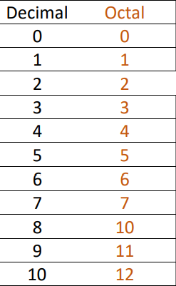
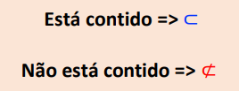
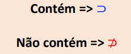
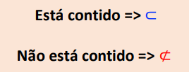
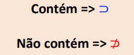
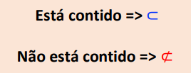
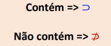

Eu entendi bem esse conteúdo, como transformar números decimais em binários e vice-versa. Fazer as tabelas me
ajudou muito a compreender melhor como
funciona esse sistema.
Peguei o exemplo acima do Google, ele mostra como transformar o número 45 em binário usando o método das
divisões sucessivas. Entendi que devemos ir
dividindo por 2 e "guardar" o resto. Depois, escrevemos os restos, começando pelo útilmo até o primeiro para
formar nosso número binário. A resposta seria: 45 na base 10 = 101101 na base 2.
O exemplo acima foi passado em aula, ele mostra como transfomar o número binário em número decimal usando a
regra da decomposição. Entendi que
basta enumerar, começando com 0, cada digito do número binário da direita pela esquerda, depois escrevemos o
digito e multiplicamos por 2 com o expoente que colocamos inicialmente (nesse caso do 0 ao 4). E por último
somamos os resultados e teremos o número decimal.
Fiz duas tabelas que a professora passou em aula e que me ajudaram um pouco a entender como fazer adição e
subtração
de
números binários:
Adição
0
+
0
= 0
1
+
0
= 1
1
+
1
= 10
1
+
1
+1
= 11
Subtração
0
-
0
= 0
1
-
0
= 1
1
-
1
= 0
0
-
1
= 1
OBS: não entendi muito bem a subtração quando o primeiro termo é 0, pois sinto dificuldade e acabo me
confundindo no momento de pedir emprestado os números na realização do cálculo.
Sistema Octal
É um sistema numérico de base 8, no qual possui somente 8 algarismos: 0, 1, 2, 3, 4, 5, 6, 7.

Peguei a tabela acima que foi disponibilizada pela professora nos slides. Pude perceber que quando o número
chega no 8 (que não existe nesse sistema) ele "pula" três números, como do 7 foi para o 10 e assim por diante.
Achei as formas de conversão fáceis, já que são quase iguais para todos os sistemas que estudamos. Aqui abaixo
colocarei exemplos tirados do Google e que ajudam a entender melhor como funcionam as conversões (divisões
sucessivas e regra da decomposição). A primeira imagem mostra como transformar número de base 10 em base 8. A
segunda mostra como transformar número
de base 8 em base 10.
A imagem abaixo mostra uma tabela que passa os números octais para os binários. Logo abaixo coloquei um exemplo
de conversão de Base 2 para Base 8, fazendo esses exemplos que consegui compreender melhor o conteúdo.
Sistema Hexadecimal
Entendi que é um sistema numérico de base 16, no qual possui 16 símbolos: dez algarismos e seis letras do
alfabeto ( A, B,
C, D, E, F.)
Peguei da internet a tabela acima que relaciona o sistema hexadecimal com o binário e o decimal. Entendi as
formas de conversões:
Base 10 -> Base 16: divisões sucessivas
Base 16 -> Base 10: potências de 16
Base 2 -> Base 16: tabela de equivalência
Conjuntos
Entendi muito bem esse conteúdo, as relações de pertencimento, os símbolos e o que significam. Os exemplos
passados e feitos em aula me ajudaram muito. Entendi como aplicar cada símbolo e que as reticências significam
que o conjunto é infinito. Retirei as imagens abaixo do material que a professora apresentou em aula, copiei no
caderno e em meu resumo para a prova, o que me ajudou a memorizar os significados e utilização.


Conjuntos numéricos
Consegui entender a maior parte desse conteúdo, apenas me confundo um pouco com os números irracionais e
números
complexos. Segue abaixo um resumo sobre o que entendi:
Números naturais ℕ: {0, 1, 2, 3...}
Números inteiros ℤ: {-3, -2, -1...}
Números racionais ℚ: (inclui fração)
Números irracionais I: (inclui raíz quadrada)
Números reais ℝ: ℚ ∪ I
Dentro desse conteúdo existem também as dízimas periódicas. Consegui entender direito como elas funcionam e
a
transformação de dízimas em frações.
"Se for uma dízima periódica simples, transforma-se em fração colocando
no numerador os dígitos de um período e no denominador tantos noves
quantos os dígitos que formam o período da dízima." Tirei essa explicação do pdf que a professora
disponibilizou, pois resume bem e consegui entender como funciona a transformação lendo ela. Por exemplo, se
a o
número que se repete for 45, o numerador será 45 e o denominador será 99. Se o número tiver três digitos, o
denominador será 999, e assim vai indo.
Se for uma dízima composta, existem maneiras diferentes. Entendi que se tiver um número antes da vírgula e
depois for apenas repetição (ex: 2,333...) devemos somar o primeiro número com o segundo, transformando o
último
em dízima simples para fração e depois somando com o primeiro. Exemplo: 2,333...= 2+0,333...= 2+3/9 = 2/1 +
1/3
= 6+1/3 = 7/3.
Já se a dízima possuir números antes e depois da vírgula que não se repetem, demorei um pouco mais para
entender, mas depois de fazer exercícios entendi. O caminho de somar é igual o exemplo que dei
anteriormente,
mas incialmente iremos multiplicar o número até não sobrar nenhum número que não se repete depois da
vírgula.
Vai
chegar uma hora que precisaremos somar frações, e para isso basta fazer o mmc, e dele dividir o denominador
e
multiplicar o numerador, somando os resultados. Depois terá divisões de fração, que basta inverter a fração
denominadora e multiplicar. Logo abaixo coloquei um exemplo que me ajudou a entender melhor.
Operação entre conjuntos
Consegui compreender bem esse conteúdo. Entendi que a união ∪ é quando queremos juntar elementos de dois
conjuntos e a intersecção ∩ é quando queremos ver quais elementos estão simultaneamente em dois conjuntos ou
mais.
Na diferença, representada pelo símbolo de subtração -, devemos tirar os elementos que estão no
segundo conjunto do primeiro. Por exemblo: A - B: basta ver quais elementos do B estão no A e tirá-los,
restando
apenas os elementos do A que não estão no B também.
Intervalos Reais
Confesso que inicialmente senti um pouco de dificuldade em compreender esse conteúdo, mas fazendo os
exercícios
e exemplos consegui me situar melhor. Coloquei abaixo uma foto do resumo que utilizei para fazer a prova e
que
me ajudou muito a entender.
Eu entendi que um intervalo é um conjunto de números que inclui todos os números entre dois valores
específicos,
representando de maneiras diferentes e usando símbolos. Também existe a representação do infinito, que é um
conjunto que "começa" em um número e nunca termina, incluindo todos os números depois dele.
Função
No início eu senti um pouco de dificuldade nesse conteúdo, mas depois, fazendo os exemplos, consegui me
situar
melhor. Entendi que a fução é uma forma de expressar as relações de grandezas de uma situação. Por enquanto,
nós
estudamos somente a função afim, que representa
f(x) = a.x + b
y = a.x + b
x -> variável independente
y ou f(x) -> varável dependente
Exemplo envolvendo função (tirado do material da professora): Um representante comercial recebe,
mensalmente, um
salário
composto de duas partes: uma parte fixa no valor de R$ 3.400,00 e uma parte
variável, que corresponde a uma comissão de 6% sobre o total de vendas que
ele faz durante o mês. Qual a função que descreve essa relação entre as
vendas realizadas e o salário recebido no final do mês?
Resposta: f(x) = 0,06x + 3400. O 0,06 veio de 6%, já que 6/100 é 0,06. A parte fixa nunca irá mudar, o que
muda
todo mês é a comissão.


 


